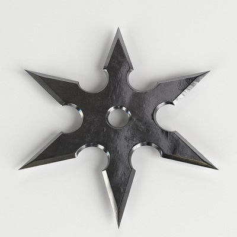

Shuriken
Os ninjas são guerreiros das sombras que fascinam o mundo repetidamente com sua arte de luta, o ninjutsu.
Esses espiões profissionais poderiam usar toda uma parafernália de arremessos ou armas de fogo.
Primeiro, o Yumi é um arco japonês. Não era usado apenas pelos ninjas, mas representava uma vantagem
definitiva para o guerreiro das sombras. Era menos usado que o Kunai, uma pequena adaga em forma de ponta
que era tanto uma ferramenta quanto uma arma. Os ninjas também podiam usar uma espada ninja, mais curta e
mais manejável que uma katana.
Entre as muitas armas de tiro dos ninjas, a mais famosa é, sem dúvida, a Shuriken, uma ferramenta de metal
que pode ser jogada em oponentes e coberta de veneno. Entre as formas de Shuriken, a estrela é chamada de
Shaken. Outra arma ninja eficaz foi o Senbon, um conjunto de agulhas de metal que você pode jogar e injetar
veneno!
A forma mais comum da Shuriken é a estrela.
As armas dos ninjas foram notavelmente popularizadas pelo mangá Naruto e, mesmo que os ninjas reais não
soubessem fazer mágica, elas eram muito eficazes!
